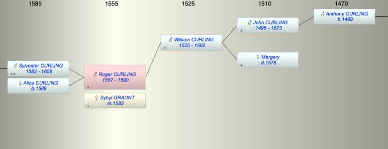

| [Index] |
| Roger CURLING (1557 - 1590) |
|  |
| b. abt 1557 |
| m. 15 Oct 1582 Sybyl GRAUNT |
| d. 1590 at St Lawrence aged 33 |
| Parents: |
| William CURLING (1525 - 1582) |
| Siblings (6): |
| Gregory CURLING (1559 - 1608) |
| William CURLING (1561 - 1618) |
| Susanna CURLING (1563 - 1604) |
| Alice CURLING (1564 - 1570) |
| Anthony CURLING (1567 - 1626) |
| Nicholas CURLING (1570 - 1619) |
| Children (2): |
| Sylvester CURLING (1582 - 1656) |
| Alice CURLING (1588 - ) |
| Grandchildren (2): |
| Michael CURLING (1608 - 1685), Robert CURLING (1615 - ) |
| Events in Roger CURLING (1557 - 1590)'s life | |||||
| Date | Age | Event | Place | Notes | Src |
| abt 1557 | Roger CURLING was born | ||||
| 1582 | 25 | Birth of son Sylvester CURLING | St Peter, Thanet | Note 1 | |
| 1582 | 25 | Death of father William CURLING (aged 57) | Note 2 | ||
| 15 Oct 1582 | 25 | Married Sybyl GRAUNT | St Peter in Thanet ex FMP PR | ||
| 1588 | 31 | Birth of daughter Alice CURLING | St John in Thanet | Note 3 | |
| 1590 | 33 | Roger CURLING died | St Lawrence | Note 4 | |
| Created on a Mac™ using iFamily for Mac™ on 8 Oct 2023 |